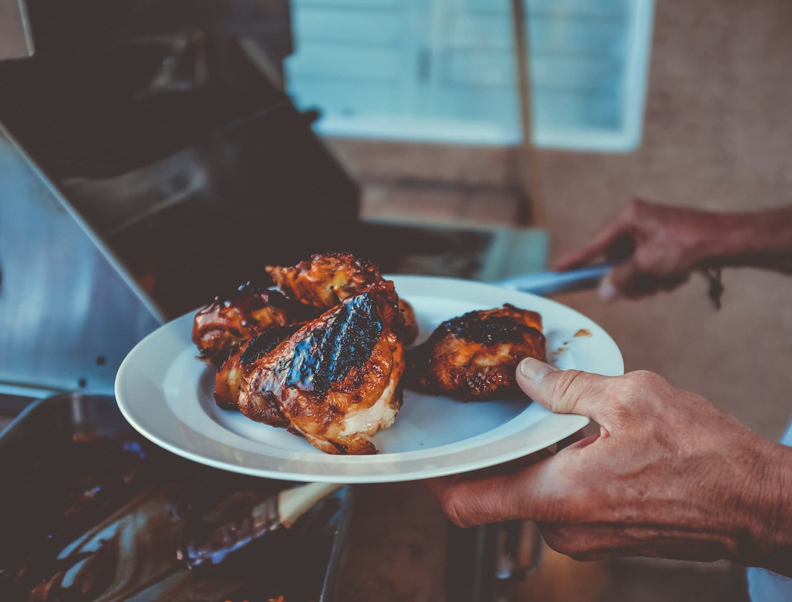

Three things, then you know everything.
So is it a shop or a restaurant?
Both. It is a service station and convenience store, and there is a soul food kitchen operating inside it. One reviewer put it in a single line: “But they also have a soul food restaurant inside.”
Google only lists the convenience store category, which is why people find the place by accident and then write reviews about the turkey wings.
When can I go?
8 AM to 12 AM, seven days a week. Same hours every day, including Sunday. The sign at the top of this page checks the clock on your device and tells you whether that means open right now.
One caution the listing itself raises: on public holidays the hours may differ. Labor Day is flagged specifically. Ring first on a holiday.
What should I order?
There is no menu published anywhere, so this site will not print one. What customers name by hand is turkey wings and meatloaf, both from the same review.
The honest answer is to call and ask what is cooked today. The food page lays out everything customers have actually said, and nothing else.
Turkey wings, meatloaf, and phrases quoted from customer reviews.
Best food I've Evert tasted in FL regarding soul food!!! Turkey wings, Meatloaf, I mean like this food will put you to sleep! Great price for the amount of food They give. Above all the guy I met was very professional, sweet and funny to … [cut off by Google]Keila Yone · Local Guide · 39 reviews · 4 years ago
Food is amazing and Sam the owner is extremely professional and very funny. Two thumbs up the the ladies the cook the food. You ladies are awesome.Linda Carter · 2 reviews · a year ago
Quoted exactly as written, including “Evert” and “the the ladies the cook the food”. Correcting a customer's words would be changing them.